#define Led 12
union uData
{
byte b[2];
int value;
};
union uData data;
#define Led 8
void setup() {
pinMode(Led,OUTPUT);
digitalWrite(Led,0);
data.b[0]=0x34;
data.b[1]=0x12;
if(data.value==0x1234)
digitalWrite(Led,1);
}
void loop() {
}
| PROTOCOLS: UART - I2C - SPI - Serial communications #001(11:57)(YouTube) |
| Fun and Easy UART - How the UART Serial Communication Protocol Works(5:41)(YouTube) |
| UART Protocol Tutorial(7:37)(YouTube) |
| How does UART work??? (explained clearly)(10:51)(YouTube) |
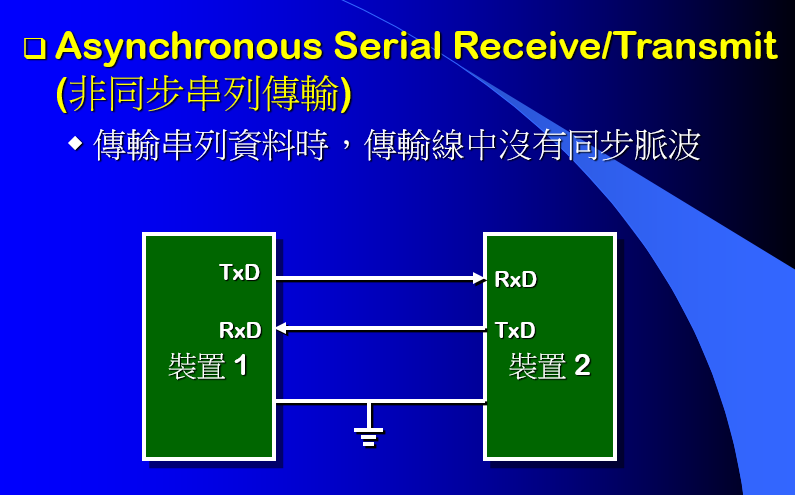 |
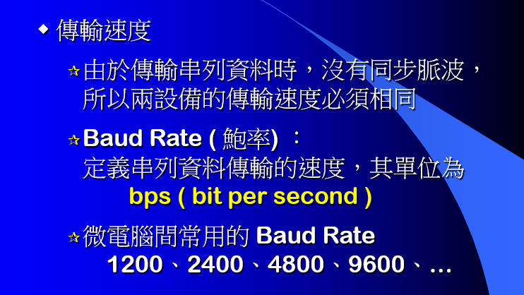 |
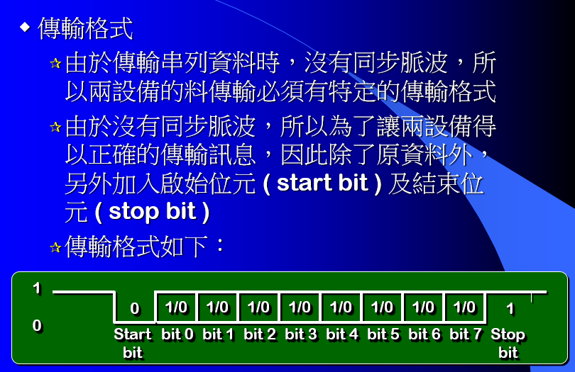 |
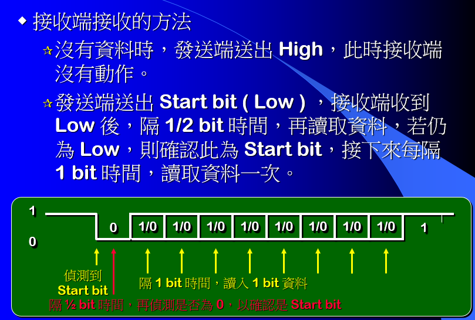 |
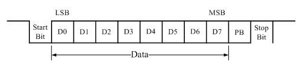 |
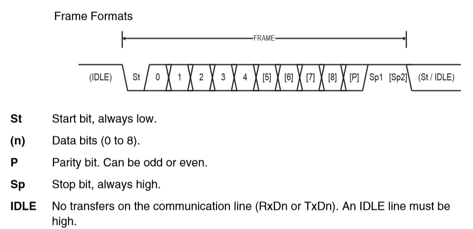 |
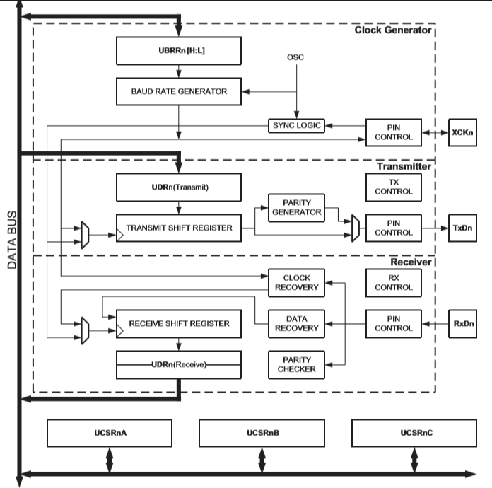 |
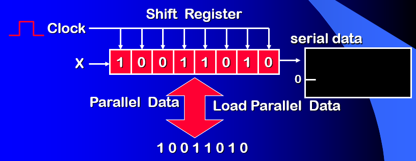 |
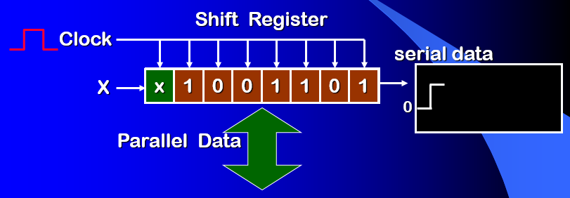 |
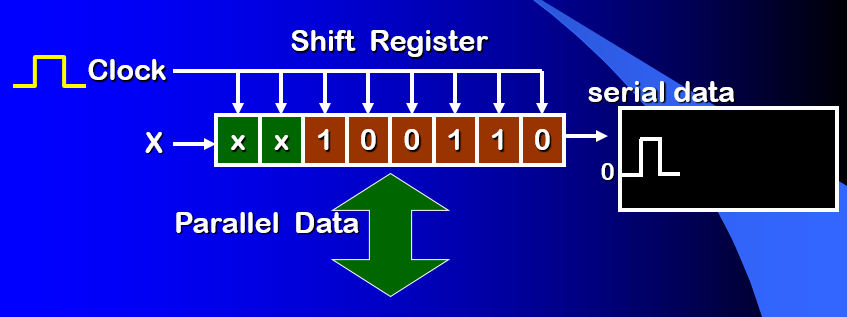 |
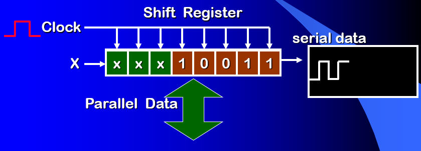 |
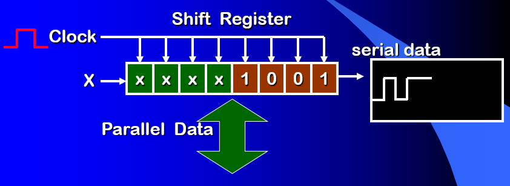 |
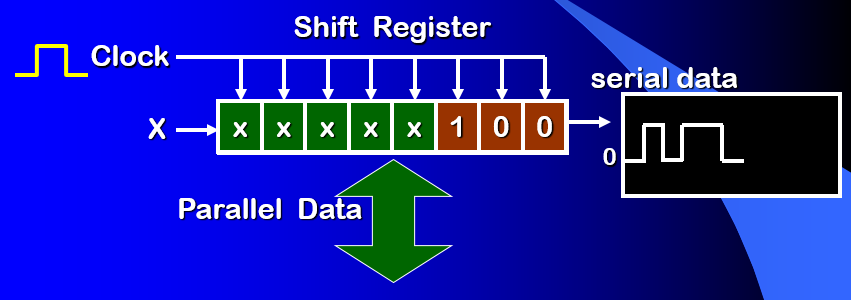 |
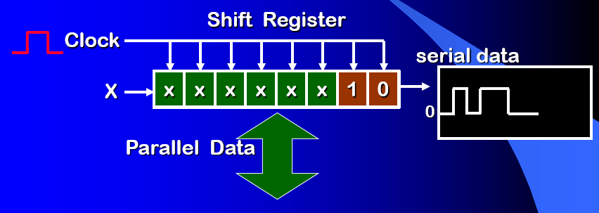 |
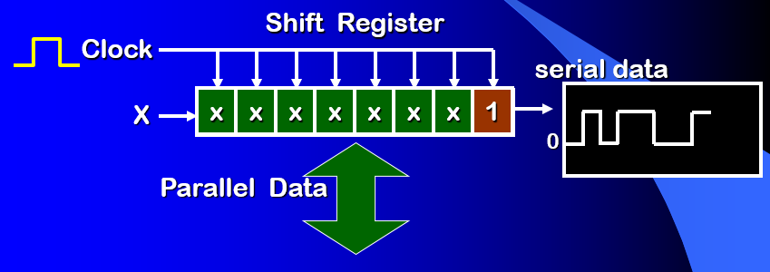 |
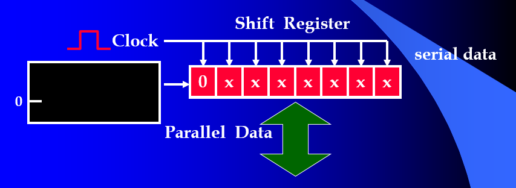 |
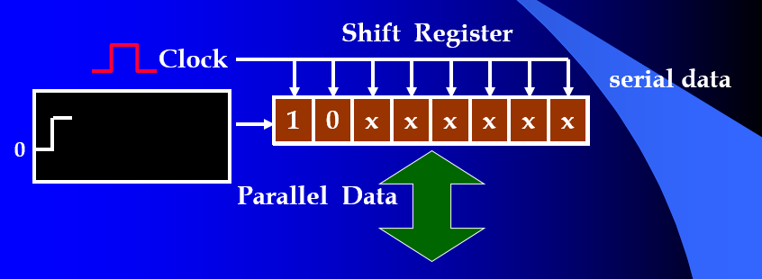 |
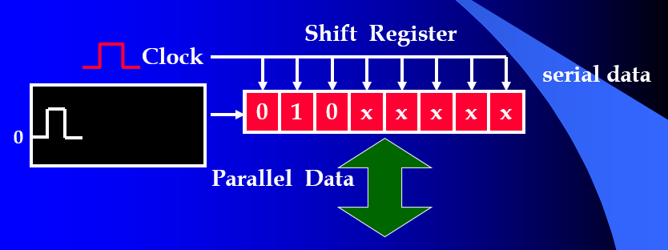 |
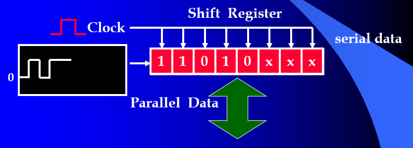 |
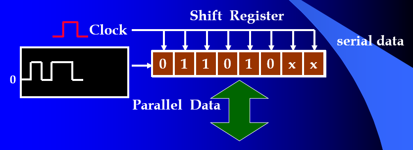 |
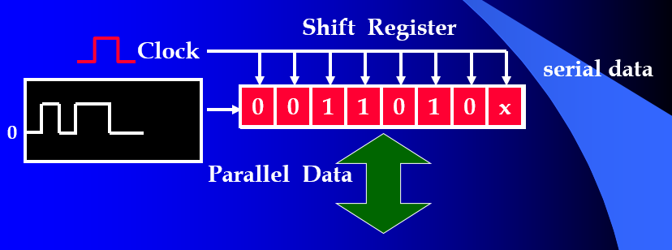 |
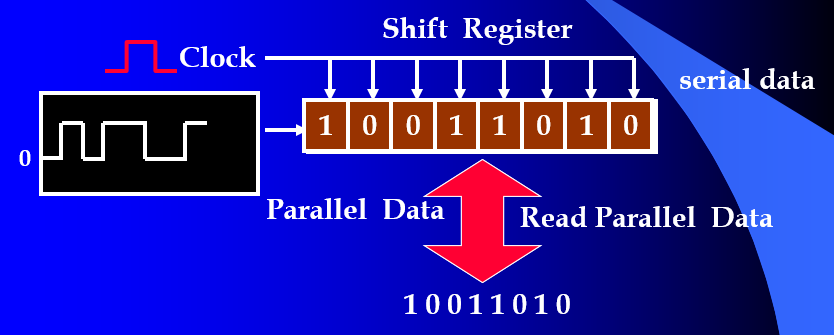 |
| byte
byte_2[]={0x31,0x41}; void setup() { Serial.begin(9600); Serial.write(byte_2,sizeof(byte_2)); } void loop() { } //Serial monitor 一律轉為ASCII Code 顯示 |
| Serial.write()
和Serial.print()的主要差異 例如： Serial.print(65); // 輸出’6’和’5′ 0x36,0x35 Serial.write(65); // Serial monitor 解釋為 ’A’ , //若傳給另一Arduino 就是 0x41 0100 0001 |
| Serial.read() return : the first byte of incoming serial data available (or -1 if no data is available) - int |
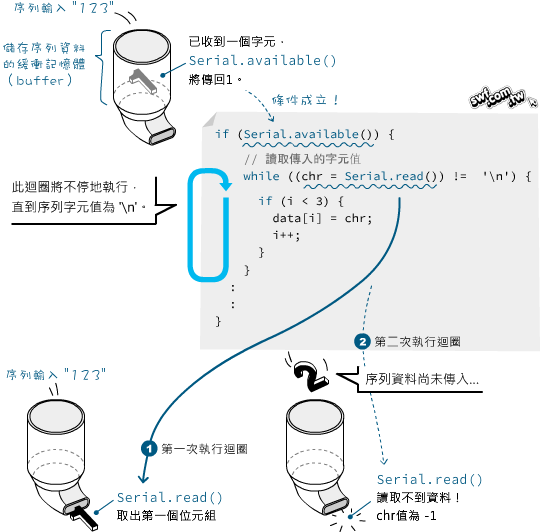 |
| int
byteNum; byte data[5]; void setup() { } void loop() { while (byteNum=Serial.available()) { for(int i=0;i<byteNum;i++) { data[i] = Serial.read(); i++; } } } |
| int
val=1025; byte Lbyte; byte Hbyte; void setup() { Lbyte=0xFF & val; Hbyte=0xFF & (val>>4); Serial.begin(9600); Serial.write(Lbyte); Serial.write(Hbyte); } void loop() { } |
| 使用union |
#define Led 12 union uData { byte b[2]; int value; }; union uData data; #define Led 8 void setup() { pinMode(Led,OUTPUT); digitalWrite(Led,0); data.b[0]=0x34; data.b[1]=0x12; if(data.value==0x1234) digitalWrite(Led,1); } void loop() { } |
| 使用Serial.write() 與Serial.read()傳送2 Byte data |
或
|